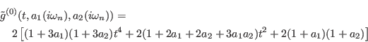
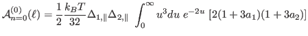
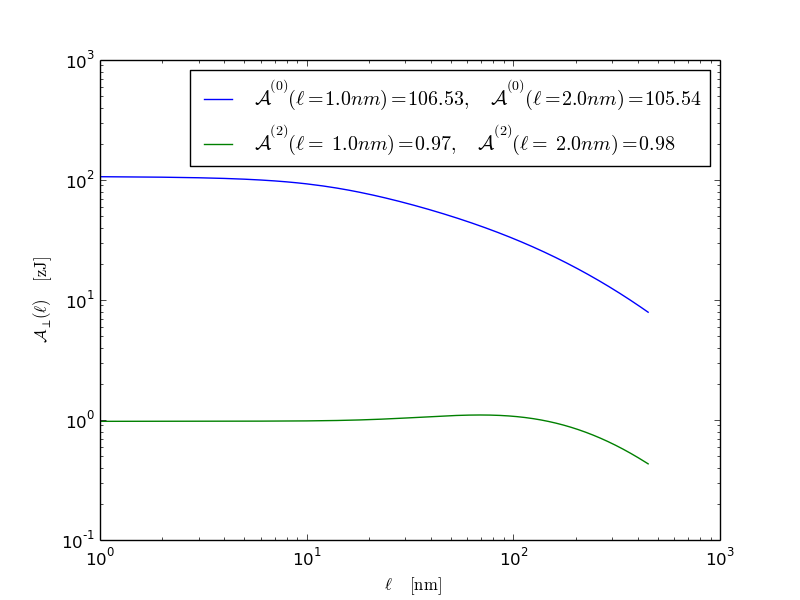

Using equations from v.4 of Rudi's report, we calculate the fully retarded
Hamaker coefficients for perpendicular, identical [6,5] CNTs in water, as given
by:
(6)

and
(7)
(8)
with the n = 0 term given by

(9)
and
(10)
where .
The two figures below give the fully retared Hamaker coefficents,
and
, as a function of separation.
Log-log plot of Hamaker coeffcients as a function of separation:
Figure 5:
Log-log plot of fully retarded Hamaker coeffiecents for perpendicular, identical [6,5] CNT's in water
as a function of separation.

Semi-log plot of Hamaker coeffcients as a function of separation:
Figure 6:
Semi-log plot of fully retarded Hamaker coeffiecents for perpendicular, identical [6,5] CNT's in water
as a function of separation.


![$\displaystyle {\cal A}_{n=0}^{(2)}(\ell) = \frac{1}{2} \frac{k_BT}{32} \Delta_{...
...elta_{2,\parallel} \int_0^{\infty} u^3 du e^{-2u} [(1 - a_1)(1 - a_2) ]$](img42.png)